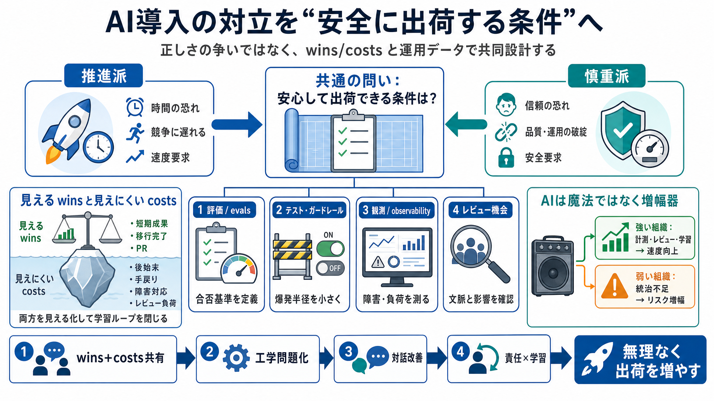

2x - Roger Wong
AI productivity: Darragh Curran argues engineering teams using today's AI tools can double output, but the gap is behavi…

AI productivity: Darragh Curran argues engineering teams using today's AI tools can double output, but the gap is behavi…
Advancements in AI are precipitating the most transformative shift in software engineering of the past 25 years.
Myself and @darraghcurran (and some special guests!) are doing a webinar about our use of AI and how we 2x'ed R&D at Int…
Webinar Q&A: How Fin 3x'd R&D output in 16 months · Our answers to your 72 questions. May 22 • Darragh Curran. 6. AI is …
What started as an email to the R&D team at Intercom has taken on a life of its own. A few months ago Darragh C. wrote a…